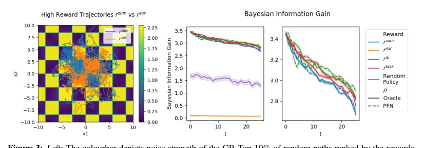
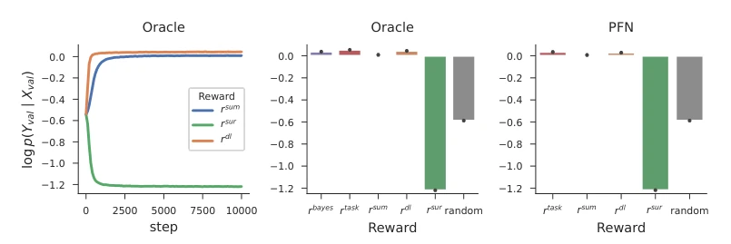
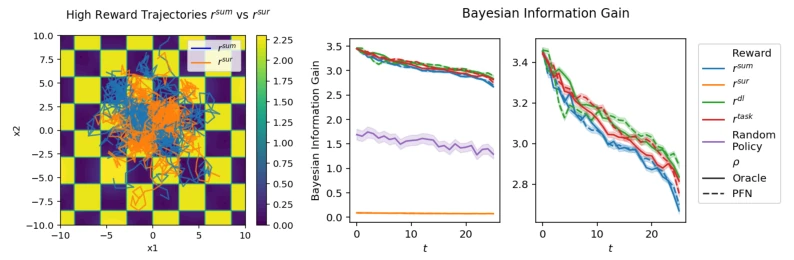
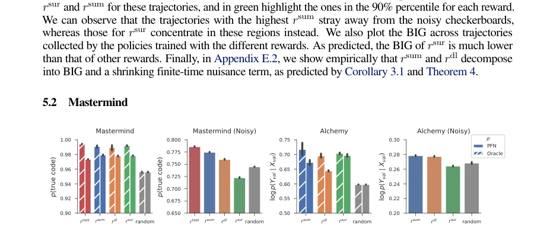

This paper attempts to use In-Context Learning (ICL) to replace expensive gradient updates to drive intrinsic curiosity; the idea is sexy, but the reality is stark. The authors rigorously prove that in general MDPs, ICL cannot unbiasedly estimate Bayesian Information Gain (BIG), suffering from "noisy TV" and inductive bias issues, and is only effective under specific BED settings. Although the experimental section demonstrates the robustness of `rsum` and `rdl` in noisy environments, the theoretical "impossibility" theorem significantly diminishes ICL's ambition as a universal world model. Overall, this is a solid work with strong theory but limited practical deployment, reminding us not to treat ICL as a panacea; especially in complex dynamic environments, it is more of an optimizer for specific scenarios rather than a universal solution.
研究动机Motivation
有效机器学习不仅依赖数据建模，更依赖数据选择。传统内在好奇心（如 Learning Progress）依赖世界模型预测能力的提升，但这需要昂贵的内层梯度下降循环（Schmidhuber, 1991a），难以扩展。ICL 作为快速预测器（Nagler, 2023; Müller et al., 2022）被视为解决方案，但缺乏理论保证。本文旨在探究 ICL 能否替代传统世界模型计算 BIG，解决计算瓶颈，同时厘清其理论边界。现有工作如 Surprisal 无法区分可约与不可约不确定性（Burda et al., 2019），而 BIG 计算困难。本研究填补了 ICL 与内在动机之间的理论空白，明确了适用场景。
Effective machine learning relies not only on data modeling but also on data selection. Traditional intrinsic curiosity (e.g., Learning Progress) relies on the improvement of world model prediction capabilities, but this requires expensive inner gradient descent loops (Schmidhuber, 1991a), making it hard to scale. ICL as a fast predictor (Nagler, 2023; Müller et al., 2022) is viewed as a solution, but lacks theoretical guarantees. This paper aims to explore whether ICL can replace traditional world model calculations of BIG, solve the computational bottleneck, and clarify its theoretical boundaries. Existing work such as Surprisal cannot distinguish between reducible and irreducible uncertainty (Burda et al., 2019), while BIG computation is difficult. This study fills the theoretical gap between ICL and intrinsic motivation, clarifying applicable scenarios.
The overall framework is divided into two stages: first, pre-train an In-Context Learner (ρ) as an implicit Bayesian predictor, learning on random policy trajectories; subsequently, freeze ρ and train policy π to maximize intrinsic reward. The core innovation lies in defining reward functions based on ρ prediction errors, such as `rsum` (improvement in future trajectory prediction error) and `rdl` (reduction in description length). Through counterfactual context manipulation (masking states), calculate the improvement of observation values on prediction accuracy. The theoretical part proves that under BED settings, these rewards asymptotically converge to BIG, while in general MDPs there is bias. Specifically, `rsum` estimates information gain by comparing future prediction errors with and without the current state, avoiding explicit parameter updates and achieving zero-cost world model evaluation.

Figure 1: Our method involves using a pretrained in-context learner ρ to construct intrinsic curiosity rewards for a policy πϕ. Trajectories unrolled by the policy are passed to the in-context learner, and the reward can be any function of the re- sulting observation prediction errors on manipulated sequence contexts. We give an example for the reward rsum, which measures the improvement in future prediction errors when a particular state is observed compared to when it is masked.
Tested in three BED environments: GP function estimation, Mastermind code breaking, and Alchemy rule discovery. Baselines include Surprisal (`rsur`), description length (`rdl`), and task reward (`rtask`). Metrics are validation set log-likelihood and BIG. Results show that in noisy environments, `rsur` performs worst due to the "noisy TV" problem, even below random policy; while `rsum` and `rdl` can distinguish reducible and irreducible uncertainty, performance is close to task reward. Ablation studies confirm the existence of theoretical bias, `rsum` is more robust under finite trajectories. Experiments validate the effectiveness of ICL in specific structured environments, but caution is needed in general MDPs.

Figure 2: Comparison of validation log-likelihood for Gaussian Processes for the Oracle and PFN predictive models. (Left) For rsur validation score decreases over training steps. (Center and right) Final validation scores: rsum and rdl achieve equivalent performance to training on rtask, but rsur performs significantly worse than a random policy.

Figure 3: Left: The colourbar depicts noise strength of the GP. Top 10% of random paths ranked by the rewards show that rsum is high for the noiseless tiles, conversely rsur favours the noisy regions. Center: BIG across trajectories generated by trained policies. rsur has the lowest information gain due to the Noisy TV problem. Right: Zoomed comparison. Higher BIG for rsum, rdl, and rtask indicates that these policies select queries that are more informative about the underlying function.

Figure 4: Validation scores for Mastermind and Alchemy. In the standard variant, all rewards are competitive. In both the noisy variants, rsur’s performance falls below the random baseline, whereas rsum and rdl remain robust.